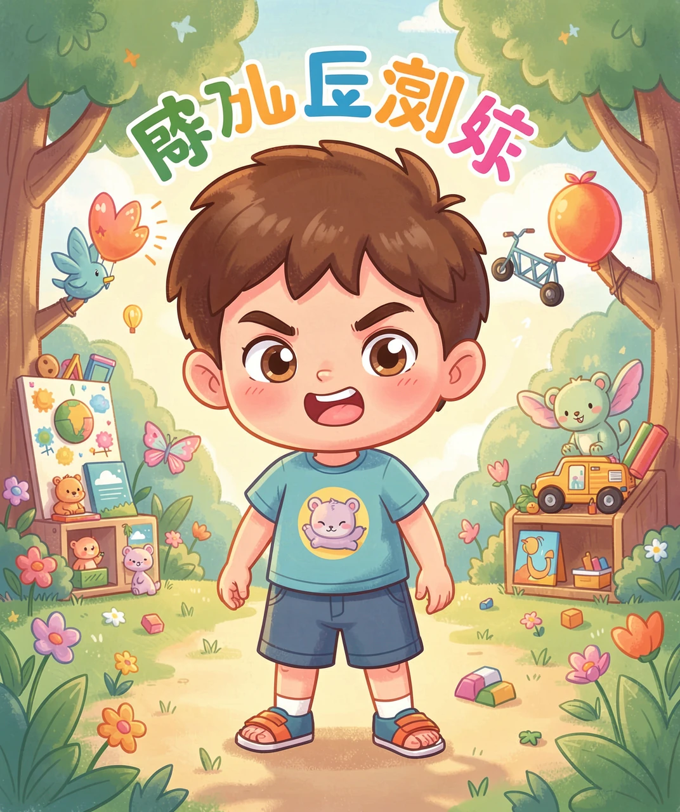
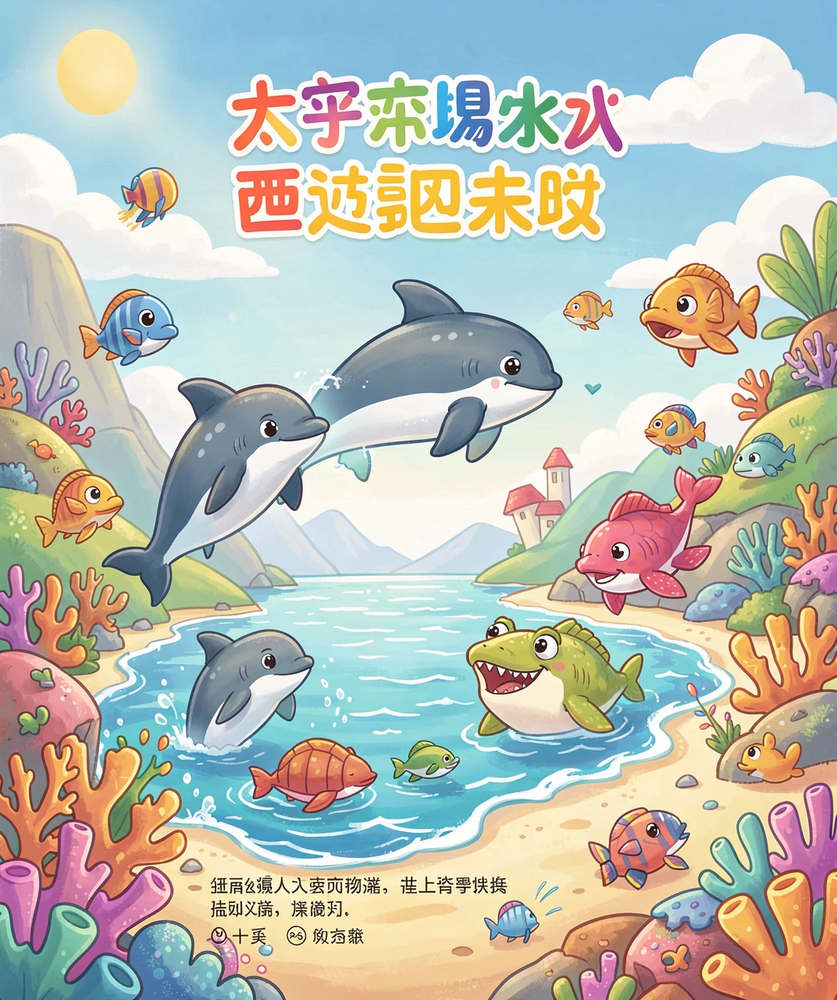
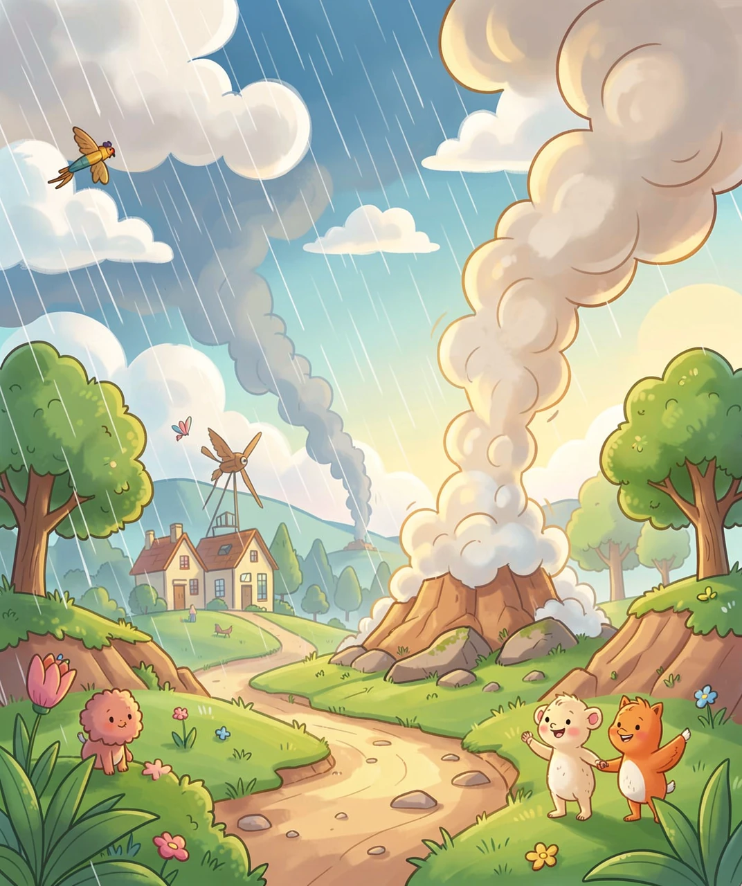
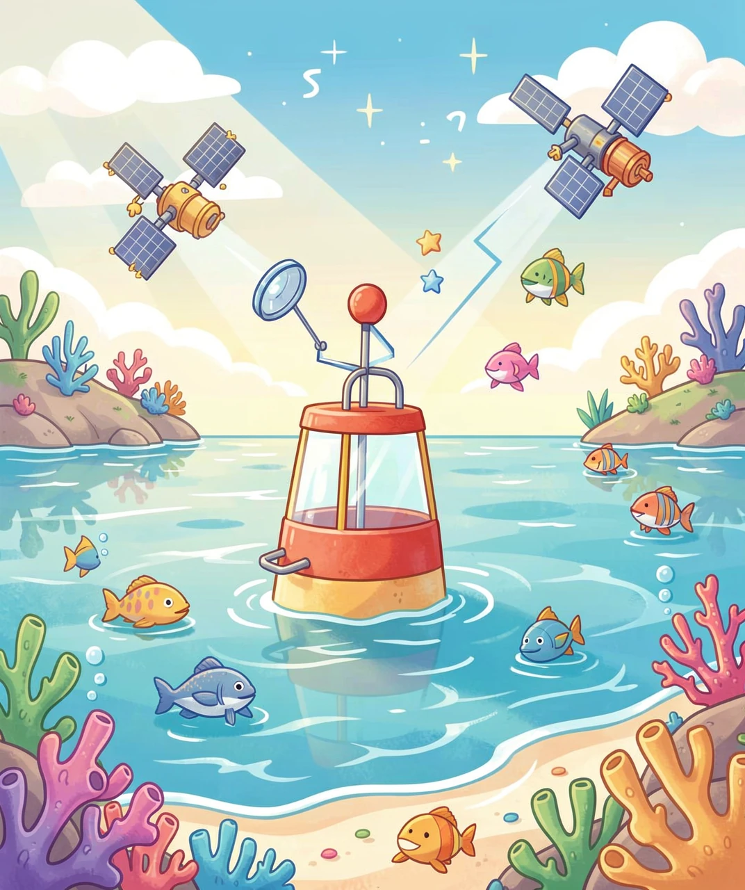
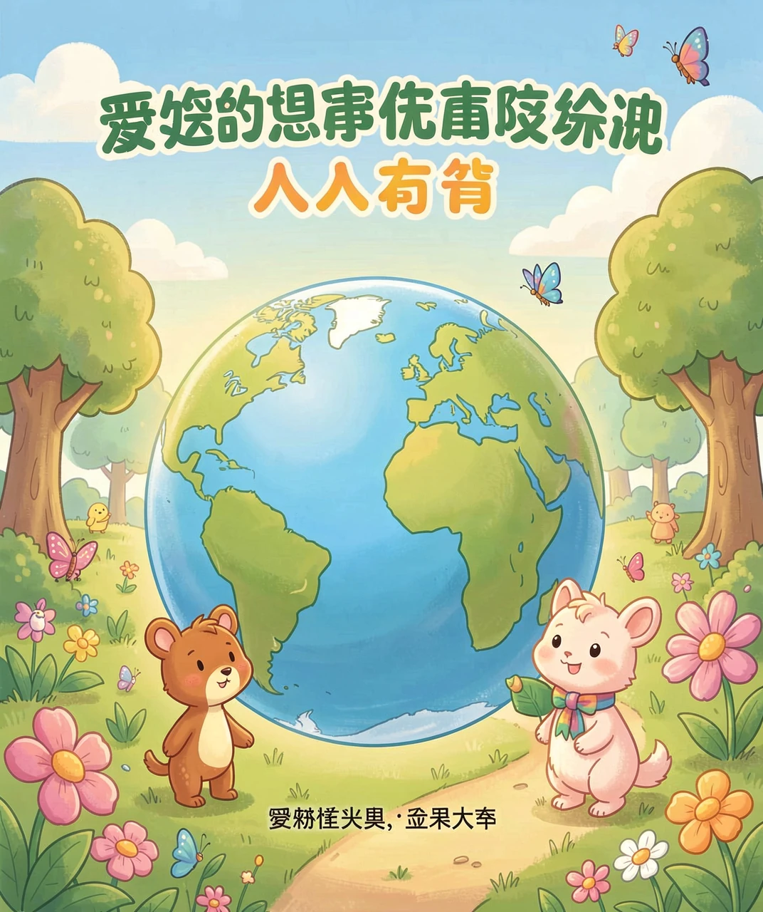

来自太平洋的「坏脾气」
如果有一天，天气预报说：今年冬天的天气会很反常，可能是「厄尔尼诺」来了。你会不会很好奇——厄尔尼诺是什么？是一个人？一个怪兽？还是一阵风？
其实，厄尔尼诺（读作 è ěr ní nuò）是一个西班牙语词，意思是「小男孩」，或者更准确地说是「圣婴」。为什么给它起这个名字呢？因为这种现象常常在圣诞节前后出现，而圣诞节是庆祝小耶稣诞生的日子，所以人们就用「圣婴」来称呼它。
但你可别被这个可爱的名字骗了！厄尔尼诺不是温柔的小男孩，它是发生在太平洋的一种巨大气候现象，一旦出现，就能搅乱全球的天气，让有的地方暴雨成灾，有的地方又干旱得冒烟。今天，我们就来认识这位「坏脾气的小男孩」。

要弄懂厄尔尼诺，我们得先认识太平洋这个大舞台。太平洋太大了，它的海水温度，就像一台超级大空调，直接影响着全世界的天气。
在正常情况下，太平洋东边（靠近南美洲）的海水比较冷，西边（靠近亚洲）的海水比较暖。这股温暖的海水，让西太平洋（比如东南亚、澳大利亚一带）的雨水特别多，而东太平洋（南美洲）则比较干燥。这就像一架跷跷板，一边翘起来，另一边就压下去。
可是每隔几年，这架跷跷板就会「翻过来」：东风变弱了，原本堆积在西边的暖水，会慢慢「溜」回东边，让东太平洋的海水变暖。这一变暖，全世界的天气就乱了套。这就是厄尔尼诺的「真面目」——它不是一阵风，而是整个太平洋海水温度的「大翻转」。

你可能想问：太平洋东边的海水变暖，为什么会影响到几万公里以外的天气呢？秘密在于——海洋和大气是一对「好朋友」，它们会互相影响。
暖海水会把热量「传」给上方的空气，让空气变热、往上升，然后形成云和雨。所以哪里海水暖，哪里就容易下雨。反过来，海水冷的地方，空气就干燥，容易干旱。
当厄尔尼诺让东太平洋变暖时，原本应该下雨的地方（比如澳大利亚、东南亚）突然不下雨了，变得又干又热，容易发生森林大火；而原本干燥的地方（比如南美洲西海岸）却突然暴雨连连，甚至发洪水。就像有人把全世界「雨水的开关」重新拨了一遍，有的地方被关掉，有的地方被打开。
更厉害的是，这股「混乱」还会沿着大气传遍全球，让我们的冬天忽冷忽热，夏天忽旱忽涝。

厄尔尼诺这么厉害，科学家们当然要想办法提前发现它。现在，他们已经能在厄尔尼诺出现前的几个月，就发出预警了。他们是怎么做到的呢？
科学家用上了各种各样的「千里眼」：海面上漂浮着成千上万个浮标，它们像哨兵一样，日夜测量海水的温度；天上的卫星，从太空盯着海洋的变化；还有海洋考察船，深入大海收集数据。
这些数据汇到一起，科学家就能画出太平洋海水温度的「地图」，看清楚暖水是不是正在往东边移动。再加上超级计算机的模拟，他们就能预测：厄尔尼诺会不会来、什么时候来、会有多强。
有了这些预警，农民可以提前改种耐旱的作物，渔民可以提前做好准备，政府也能提前防灾，减少损失。科学，真的能帮我们「未卜先知」。

你可能觉得，厄尔尼诺离我们很远。其实，它和每个人的生活都息息相关。
当厄尔尼诺来临时，我们可能会遇到「暖冬」——冬天没那么冷了，但也可能出现极端的暴雨、暴雪或者干旱。粮食的收成、海鲜的价格、夏天的用电量，都可能跟着受影响。所以，关注厄尔尼诺，就是关注我们自己的吃穿住行。
更重要的是，科学家正在研究一个问题：随着全球变暖，厄尔尼诺会不会变得越来越频繁、越来越强？这提醒我们，要爱护环境、减少污染，保护我们共同的地球。
认识了厄尔尼诺，你就读懂了一个「地球的秘密」——原来，遥远的太平洋海水的温度变化，竟然能牵动全世界的天气。大自然就是这么神奇，又这么环环相扣。

（答案：B、B、A、B、B。你都答对了吗？）